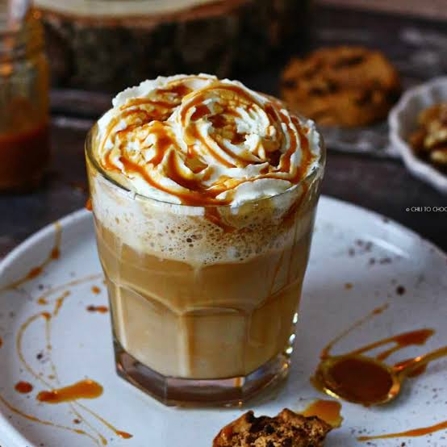

Caramel Latte
Inicio

Description
El caramel latte es una bebida caliente de café hecha con espresso, leche vaporizada y sirope dulce de caramelo.
Es fácil de preparar en casa y sabe como si viniera de una cafetería.
Ingredients
- 1 shot de espresso o café fuerte
- 1 taza de leche
- 2 cucharadas de sirope de caramelo
- Nata montada (opcional)
Steps
- Prepara el espresso o el café fuerte y viértelo en una taza.
- Calienta y bate la leche hasta que esté tibia y espumosa.
- Añade el sirope de caramelo al café y revuelve.
- Vierte la leche vaporizada sobre el café.
- Cubre con nata montada y un poco más de caramelo si lo deseas.